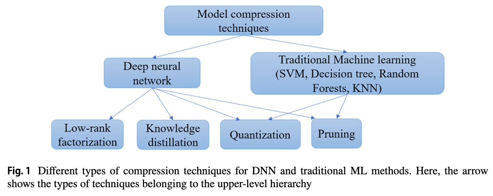

Pruning
Motivation
-
Primary motive of pruning is to reduce the storage requirement of the DL model and make it storage-friendly.
→ Pruning parameters from the dense layer helps in making the model smaller.
-
Pruning also helps to reduce the overfitting problem of the NNs.
I personally consider this as the key motivation of applying pruning (and other model compression methods) to improve the performance of outlier detection.
-
A model can be pruned either during or after the training.
Types of Pruning
- Weight Pruning : prunes out (zeros out) the weight connections if they are below some predefined threshold
- Neuron Pruning : remove the individual neurons if they are redundant → all the incoming and outgoing connection of the neuron is removed
- Filter Pruning : remove the filters that are ranked less important → importance of filters can be calculated by L1/L2 norm
- Layer Pruning : from a very deep network, some of the layers can also be pruned.
Pruning for FC layers
- LeCun et al. (1990) first introduces the idea of feed-forward network pruning
- suggested the removal of the weights based on their saliency (if the removal of the weight parameter has a small effect on the training error)
- authors said that small magnitude weights have less impact on the training error, and thus have small saliency.
To determine the saliency (and lead to above observation), LeCun et al introduced a method called “Optimal Brain Damage (OBD)” which second derivative of the obejctive function is used with respect to the parameters.
- Saliency $s_k$ is calculated by $s_k = h_{kk} u_k ^2 / 2$ where $u_k$ is weight parameter, $h_{kk}$ is the second-order derivatives for the parameter.
- effect on accuracy and training will be least if small-magnitude parameters are eliminated
- Network needs few times of re-training to gain a considerable accuracy again.
- Hassibi and Strok (1993) proposed another method of FC layer pruning.
- authors claimed that eliminating small magnitude weights can eliminate wrong weight connections!
They say that small magnitude weights can also be necessary for lowering the error!
- propose a method of “Optimal Brain Surgeon (OBS)” which showed that the Hessian matrix is in fact non-diagonal.
- Suzuki et al (2001) remove the network connections based on their influence on the error
- remove the network based on their influence on the error, and retrain the network using back-propagation
- Checkout the exact algorithm here
- Train a large enough NN until $E \leq E_P$
- Remove the $r$ th unit virtually and calculate $E^{(r)}$
- If every unit is examined by removing it virtually and calculating $E^{(r)}$, then go to Step 4, else go back to Step 2.
- Remove the $a$th unit where $E^{(a)}$ is the minimum among $E^{(r)}$s.
- Retraing the NN, which has been removed of the $a$ th unit, by back-propagation
- If $E \leq E_p$ ; then memorize the weights and the structure, and go back to step 2, else replace the network by the previous one, and finish the steps.
- Srinivas and Babu (2015) instead remove neruons which are determined as redundant
- Which neuron is redundant? author answers - Similar neurons are redundant.
-
Authors found out that not only single weight being equal to zero create redundancy in the network, equal weights also create redundancies
→ If two weight sets W1 and W2 are similar, then one of them can be removed
-
To find out and prune those, authors prune the weights which changes the output neuron activations the least, removing a set of weights at once.

- Ardakani et al. (2016) just randomly remove (zeros out) the connections
-
Considering the network layer with weight $\mathbf{W}$ and bias $\mathbf{b}$
\[\mathbf{y} = \texttt{nn.ReLU} (\mathbf{Wx+b})\]authors introduce the sparse weight matrix $\mathbf{W}_s$
\[\mathbf{W}_s = \mathbf{W} \cdot \mathbf{M}\]where $\mathbf{M}$ is called as a “Mask matrix” which is a random binary matrix.
-
Now, we can generate a sparse fc layer by replacing $\mathbf{W}$ with $\mathbf{W}_s$
\[\mathbf{y} = \texttt{nn.ReLU} (\mathbf{W_s x+b})\] -
How do we generate this “Mask matrix” $\mathbf{M}$?
→ Application of Linear Feedback Shift Register (LFSR)

-
Then, retrain the network!
-
Checkout the specific algorithm here

-
-
- Babaeizadeh et al (2017) propose NoiseOut algorithm.
- Removal of neurons from the network takes place based on the correlation among activations of neurons in the inner layers
- Remove one of the two neurons with strongly correlated activations
- Some other algorithms replace the FC layer with another type of layer
- Yang et al (2015) replaces the FC layer with Adaptive Fastfood transform
- NIN and GoogleNet replaces FC layer with global average pooling layer
Quantization
Motivation
-
Most of the DNNs store their weights using a 32-bit floating point numbers
→ Reducing the number of bits can lead to significant reduction in necessary operations / size of the model
-
Quantization can be considered as a gradual thought process
- Quantization of weights
- Quantization of gradient / activation
Types of Quantization
- Weights can be quantized to 16-bit, 8-bit, 4-bit or even with 1-bit (binary)
-
Creating a cluster of weights
→ all the weights which fall into the same cluster can share the same weight value
→ we only need to fine-tune the shared weights instead of 32-bit full precision weights
-
Quantization can be applied during / after the training of network
→ Qunatization after training : applied to reduce inference time and energy
→ Quantization during training : applied to reduce the network size, make the training efficient
Quantization During Training
- Soudry et al. (2014) (which, by the way, is a popular paper that proposed the method of dropout) presented expectation back-propagation (EBP) algorithm which can be used to train a multi-layer NN with disccrete weights
- Chen et al. (2015) proposed HashedNets, which implemented the concept of shared weight
- Concept of hash function is used to group the weight connection into hash buckets randomly
-
All weight connections belonging to the same hash bucket share the same parameter
(All weight connections grouped to $i$th hash bucket share the same weight $\mathbf{w}_i$ )
- Shared weight of each connection is determined by a hash function

- Courbariaux et al. (2015) introduces BinaryConnect, in which weights are restricted to have only two values (-1 or +1) → change the matrix-accumulation operation inside the neuron to a simple accumulation.
-
Transforms the real-valued weights into binary weights stochastically as:

-
Note that real-valued weight is used during back propagation & parameter update

-
- Hubara et al. (2016) proposed Binarized Neural Network (BNN)
-
Weight and activations are constrained to have the values between +1 and -1.
Recall that BinaryConnect did not binarize the activations!
- To that end, activation function is set as a sign function
-
To back-propagate the sign function, authors approximate it as Htanh function.

-
-
Hou et al. (2017) introduce a loss-aware binarization shceme that considers the effect of binarization on the loss.
Authors claim that earlier quantization techniques do not consider the quantization effect on the objective loss function!
- Authors consider the loss explicitly during quantization and obtain the quantization thresholds and scaling parameter by solving an optimization problem of the loss.
-
Meanwhile, Sung et al. (2015) finds out that “bigger models are resilient to quantization while the smaller networks are less resilient to quantization”.

-
Also, ReLU activation function, innately unbounded, may require high-bit precision, making the quantization difficult. This can be solved by using a clipping activation function. However, this introduces an interesting problem:
What is the optimal clipping value for the clip function to replace ReLU function?
To answer this question, Choi et al. (2018) finds the otpimal qunatization scale $\alpha$ during training, at the same time, implementing a new clipping function called PACT.

Quantization After Training (for Efficient Inference)
- Gong et al. (2015) applied vector quantization to compress the DNNs
- Authors assess two classes of methods for compressing the parameters in FC layers
- First is Matrix Factorization Methods : Singular-Value Decomposition (SVD)
- Second is Vector Qunatization Methods
-
Binarization : given the parameter $\mathbf{W}$, we take the sign of the matrix
\[\mathbf{W}_{ij} = \begin{cases}1 & \text{if } \mathbf{W}_{ij} \geq 0 ,\\ -1 & \text{if } \mathbf{W}_{ij} < 0 \end{cases}\] -
Scalar Quantization using K-means (KM) : for $\mathbf{W} \in \R^{m\times n}$ , flatten it to $\mathbf{w} \in \R^{mn}$ and perform k-means clustering to the values
\[\min \sum_{i} ^{mn} \sum_j^k \|w_i - c_j \|_2 ^2\]where each value in $\mathbf{w}$ is assigned to a cluster index → Given $k$ centers we only need $\log_2 (k)$ bits to encode the centers.
Despite the simplicity of this approach, authors claim that this approach gives surprisingly good performance for compressing parameters!
-
Product Qunatization (PQ) : partition the vector space into many disjoint subspaces, and perform quantization in each subspace!
→ Specifically, given the matrix $\mathbf{W}$, we partition it column-wise into several submatrices
\[\mathbf{W}= [\mathbf{W}^1, \mathbf{W}^2, \cdots, \mathbf{W}^s]\]and then perform k-mena clustering to each submatrix $\mathbf{W}^i$
-
Residual Quantization (RQ) : qunatize the vectors into $k$ centers and then recursively qunatize the residuals! → Given a set of vectors $\mathbf{w}_i$ , $i \in 1, \cdots, m$ at the first stage, quantize them into $k$ different vectors using k-means clustering → Next, compute the residual $\mathbf{r}_z ^1$ between $\mathbf{w}_z$ and first code $\mathbf{c}_j^1$ → k-means cluster the residual $\mathbf{r}_z^1$ → repeat the same procedure
→ Final vector representation is
\[\hat {\mathbf{w}}_z = \mathbf{c}_j ^1 + \mathbf{c}_j ^2 + \cdots + \mathbf{c}_j ^t\]
-
-
Han et al. (2016) combines several model compression techniques : proposing three-stage pipeline of pruning → quantization → Huffman coding

-
Zhou et al. (2017) improved the prediction accuracy of quantized NN by balancing the distribution of quantized values using histogram equalization.
Balanced Quantization_ An Effective and Efficient Approach to Quantized Neural Networks.pdf
Knowledge Distillation
Note that most of below KD methods cannot be directly applied to non-classifier networks. → Developing KD algorithms that can be applied to autoencoder type networks may be an interesting approach to take.
- Bucilua et al. (2006) first introduced the concept of knowledge transfer.
- Ba and Caruana (2014) further extended the idea of KD
- First train a large DNN with conventional cross-entropy objective function
- Next, shallow neural network is trained by minimizing the squared difference between the logits produced by the bigger model and logist produced by the smaller model.
-
Hinton et al. (2015) introduced the concept of temperature $T$ to generate softer logits
\[q_i = \frac{\exp (z_i /T)}{\sum_j \exp (z_j /T)}\]
-
Romero et al. (2015) uses the teacher network’s middle layer as hints to guide the training of smaller student model.

- Defining $P_S = \text{softmax}(\mathbf{a}_S)$ and $P_T = \text{softmax}(\mathbf{a}_T)$
-
Temperature technique is also applied as well
\[P_S^ \tau = \text{softmax}(\frac{\mathbf{a}_S}{\tau})\] -
Student network is trained to optimize the following loss function
\[\mathcal{L}_{DK}(\mathbf{W_S})= \mathcal{H}(\mathbf{y_{true}}, P_S) + \lambda \mathcal{H}(P_T^\tau , P_S^\tau)\] -
Also, hint-based training objective is defined by

-
Kim et al. (2018) states that, “if the teacher’s knowledge is directly provided to a student model without any explanation, then a student cannot learn it properly”. To that end, authors translate (paraphrase) the knowledge into simpler terms using convolutional module.

-
Reading above figure’s explanation, one might instantaneously wonder “how is the paraphraser trained unsupervisedly” before the FT?
→ Trains the paraphraser network $P(\cdot)$ , which is basically an convolutional autoencoder but the dimensionality reduction happens channelwise, not on the spatial dimension.
\[\mathcal{L}_{rec}= \|x- P(x)\|^2\] -
Then, how is the translator trained? According to the paper, “the translator is trained jointly with the student network” so that the student network can learn the paraphrased information from the teacher network.
→ To that end, student network is trained by the sum of two loss terms
\[\mathcal{L}_{\texttt{student}} = \mathcal{L}_{\texttt{cls}}+\beta \mathcal{L}_{\texttt{FT}}\]→ First is classification loss, $\mathcal{L}_{\texttt{cls}} = \mathcal{H}(S(I_x), y)$
→ Second is the factor transfor (FT) loss (intutivie form)
\[\mathcal{L}_{\texttt{FT}} = \Big \|\frac{F_T}{\|F_T\|^2 } - \frac{F_S}{\|F_S\|^2} \Big \|_p\]
-
- Lan et al. (2018) trains a student model and teacher model simultaneously, unlike any other KD methods.
- Sirnivas and Flueret (2018) showed that matching the Jacobian between student and teacher networks can be an alternative solution of knowledge transfer/distillation.
Low-rank factorization
Most of the low-rank factorization methods are further developed to work better on CNNs. Only those which can also be applied to FC layers are listed below.
Low-rank factorization compresses a weight matrix $A$ with $m\times n$ dimension having rank $r$ to a smaller dimension matrices. Singular Value Decomposition (SVD) is a popular method to do so.
- Saniath et al. (2013) uses SVD on the final weight layer to reduce the parameters!
-
Novikov et al. (2015) uses a compact multilinear format (Tensor-Train format) to represent the FC weight matrix using few parameters while keeping enough flexilbity to performa signal transformations.
cf) learn about Tensor Train Decomposition [link]